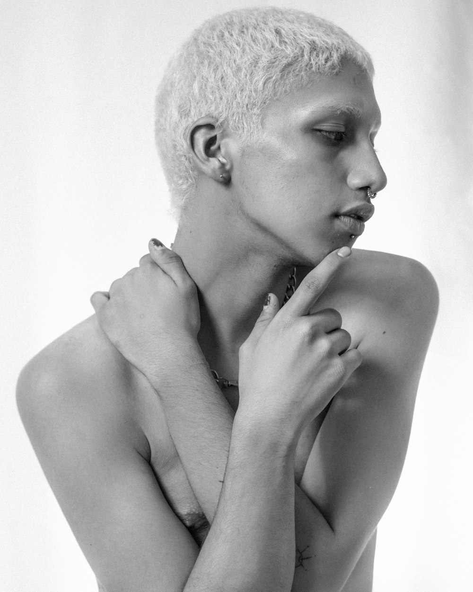
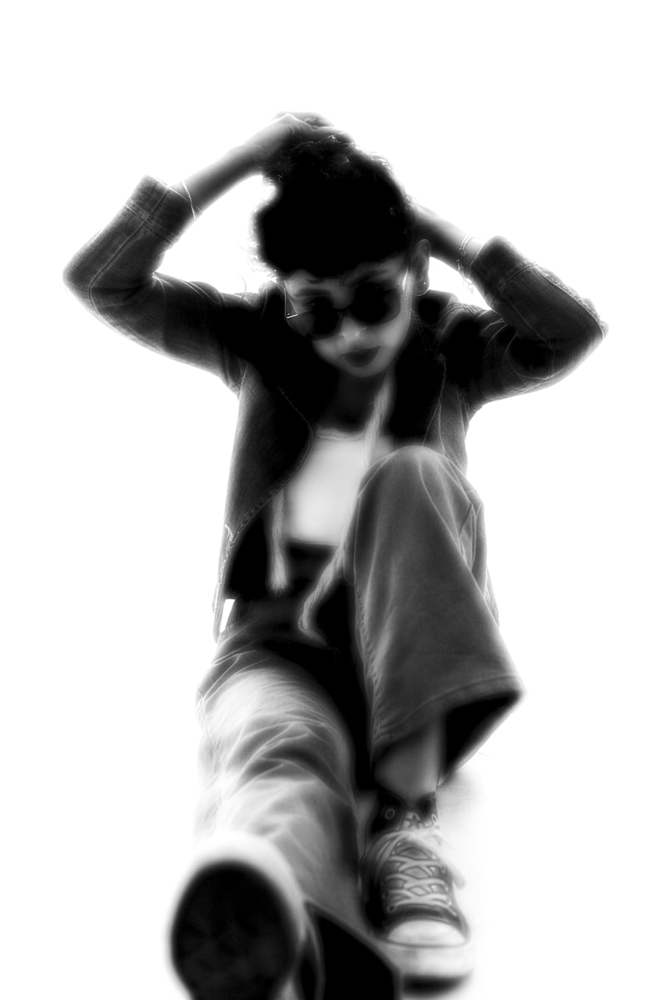
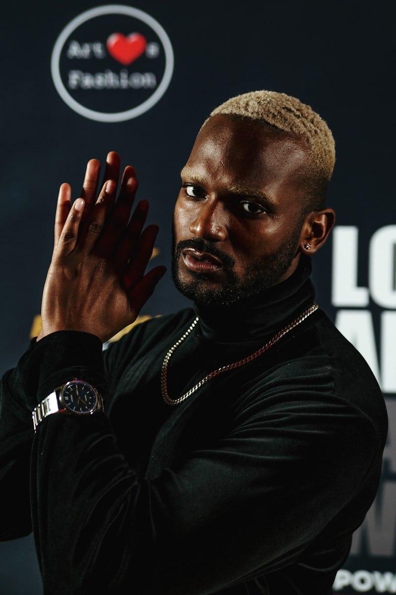
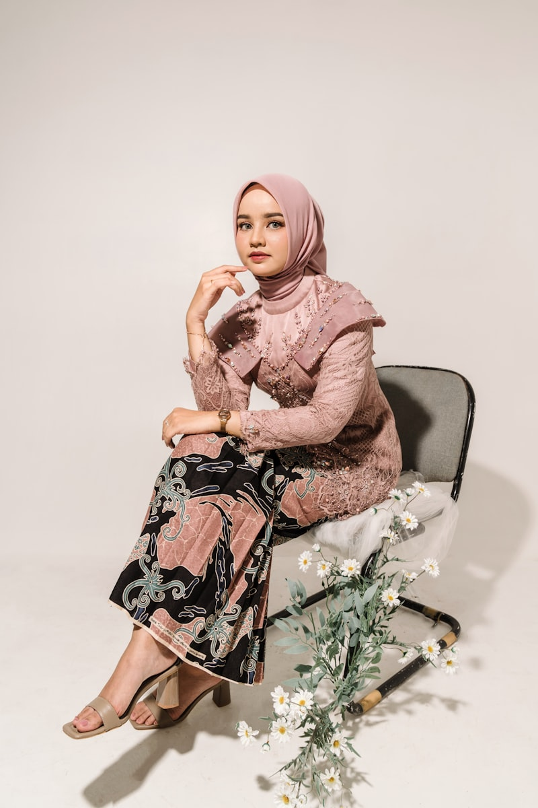
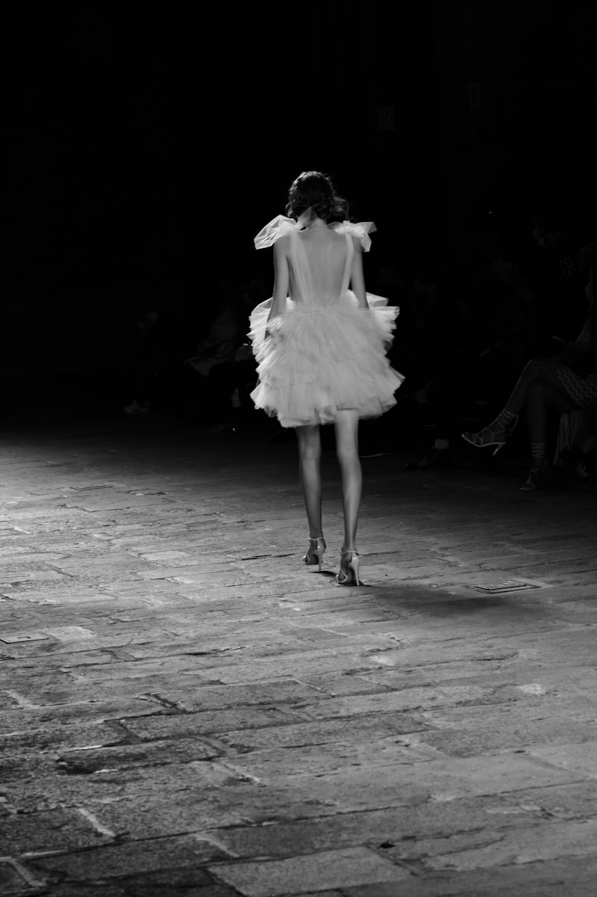

The collection begins in darkness — a single figure emerging from shadow. The opening look establishes the vocabulary: sharp shoulders that soften into draped panels, a tension between control and release that runs through every piece.

By the fourth look, the palette shifts. Burnt sienna appears — first as a thread, then as a lining glimpsed through movement, and finally as a full garment that glows against the surrounding darkness like an ember.
Every seam is intentional. Every fold is considered. But nothing is rigid. The clothes move because the person wearing them moves. That's the difference between architecture and fashion — fashion breathes.


The final movement returns to darkness, but differently than where we began. There's warmth now — the burnt sienna has mixed with the blacks, creating tones that feel lived-in, like a well-worn leather jacket or a city street after rain.


Credits
- Design
- Willie Austin
- Photography
- Studio Name
- Styling
- Stylist Name
- Hair & Makeup
- Artist Name
- Models
- Model Agency
- Production
- Production Company